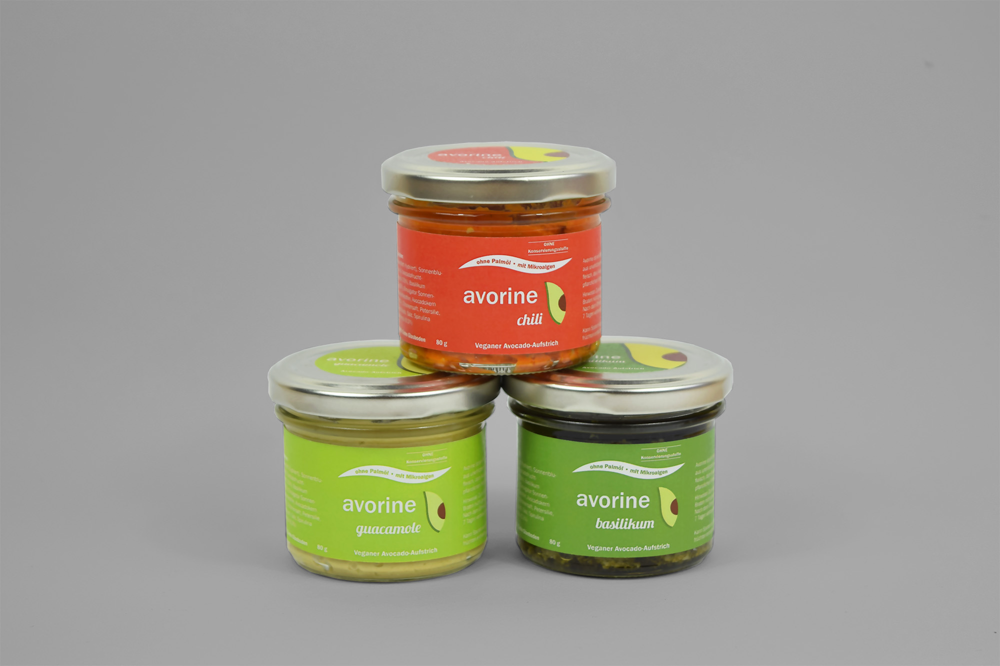
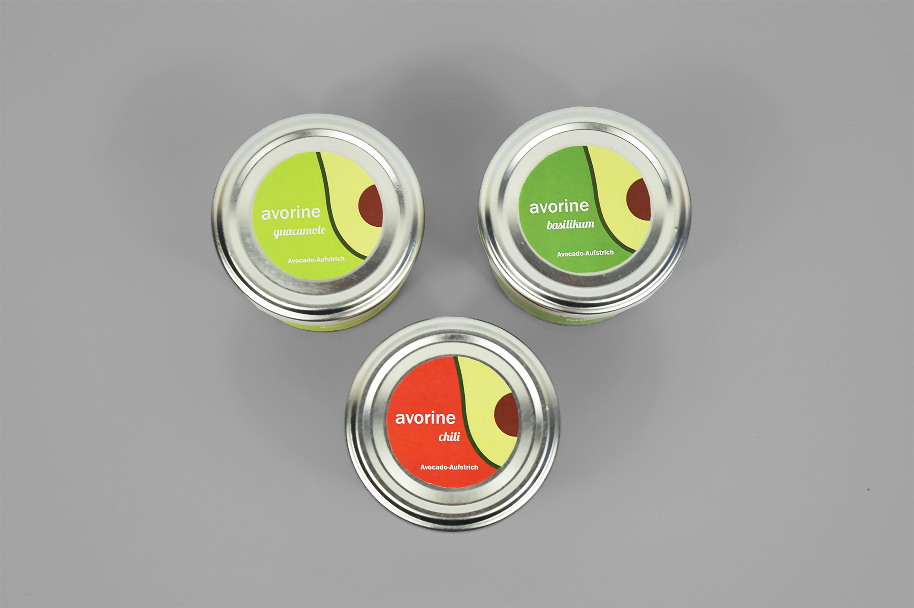

- Für den von Studierenden der Hochschule Bremerhaven entwickelten Brotaufstrich avorine habe ich ein Logo und Etiketten für die drei Sorten Basilikum, Guacamole und Chili gestaltet.
- Herausforderungen
- Der vegane und gesunde Brotaufstrich soll hipp und jung wirken.
- Lösungsansatz
- Für das Logo habe ich eine minimalistische in einen Kreis eingepasste Darstellung einer Avocado gewählt. Die knalligen Farben und die geschwungene Schrift Lobster machen avorine zu einem Blickfänger.
- Auftrag: Design von Etiketten für einen Brotaufstrich
- Kunde: Kevin Drasl
- Entstehung: Studentische Gruppenarbeit
- Datum: Februar 2018

